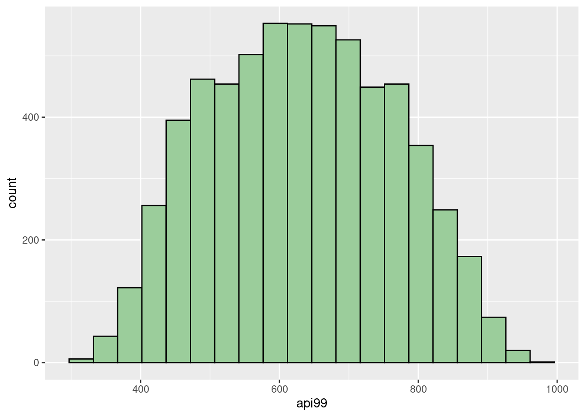

48 Introduction to common sampling techniques in r
Yuanyi Hu
48.0.1 Motivation
This semester, we have learned a lot of valuable techniques for analyzing the potential information behind large-scale data. Sometimes, the entire population data are not accessible due to the cost of data collection. It’s also quite efficient to analyze the key information by finding a proper sample to estimate the population. This tutorial introduces how to conduct common sampling methods in R and different scenarios to use them.
48.0.2 Simple random sampling
Simple random sampling is one of the most popular and frequently used methods in research and social survey. In a simple random sampling, every element in the population has an equal probability of being selected. The package survey is very helpful to realize this method, and the package srvyr will calculate summary statistics on survey data. To illustrate this process, we will use the api dataset from survey. The api dataset records information about student performance in California schools based on the academic performance index (that’s why it’s named as api) computed from standardized testing and other relevant information about schools.
In this example, we will use a sample of \(600\) schools, to estimate the total api99 (academic performance index in 1999) in the entire population. In other words, this process will show the precision of using simple random sampling to select approximately \(10%\) of population data to estimate the target information. As shown below, apipop has \(6194\) rows and \(37\) columns. Since we are focusing on api99, we should first check whether there are missing values (NA) in that column.
#load data, we use the population data in it, apipop
data(api)
#check number of rows and columns:
dim(apipop)## [1] 6194 37## [1] 0Based on the above check, there is no NA in api99. We can first sum up all api99 in the population data, and denoted as total_api99. total_api99 is equal to \(3914069\). Then, we can use the function sample to select a sample of \(600\) out of \(6194\). Since we want to use each element only once, we should set replace=F, but of course you can choose to make a SRS with replacement in other situations.
## total_api99
## 1 3914069
#if removed random seed, then we will get different results each time
#here is just for reproducibility of results
set.seed(100)
#make a SRS with size of 600 without replacement
api_sample = apipop %>%
slice(sort(sample(1:6194,size=600, replace=F)))
dim(api_sample)## [1] 600 37With the help of histograms, we can see that our sample reflects a similar distribution as the entire population. It’s reasonable to see the slight difference between them since the sample only contains around \(10\%\) data.
ggplot(api_sample,aes(x=api99)) +
geom_histogram(fill="darkseagreen3",col="black",bins = 20)
ggplot(apipop,aes(x=api99)) +
geom_histogram(fill="darkseagreen3",col="black", bins = 20)
Then, we can summarize the sample mean, variance, standard deviation, estimated total, and the standard error of estimated total. Recall that sample mean is an unbiased estimator for the population mean. Hence, calculating the total api99 in population by using the product of population size and sample mean is still unbiased because of the property of expectation, \(E[aX]=aE[X]\). Then, the standard error of this estimate can be calculated by \(N\sqrt{1-\frac{n}{N}}\frac{s}{\sqrt{n} }\), where \(N=6194\) and \(n=600\) in our case.
api_sample %>%
summarise(sample_mean=mean(api99),
sample_variance = var(api99),
sample_std = sd(api99),
estimated_total_api99 = mean(api99)*6194,
se_estimated_total = 6194*sqrt((1 - 600/6194))*sd(api99)/sqrt(600))## sample_mean sample_variance sample_std estimated_total_api99
## 1 632.6017 18159.5 134.7572 3918335
## se_estimated_total
## 1 32383.45The estimated total api99 is \(3918335\), which is relatively precise compared with the real value at \(3914069\). The other way to find the estimated total is using the functions svydesign and svytotal of the survey package, we can see that the results are same as above. Also, we can use confint to find a confidence interval for our estimate. By default, it will calculate the \(95\%\) confidence interval, and in our example, the real total api99, \(3914069\), is in this interval.
api_sample_d = svydesign(id=~1, data=api_sample, fpc=rep(6194,600))
svytotal(x=~api99,design=api_sample_d)## total SE
## api99 3918335 32383## 2.5 % 97.5 %
## api99 3854864 398180548.0.3 Stratified sampling
The other common sampling method is stratified sampling. We can use it when a population can be partitioned into subgroups, each subgroup having a distinct pattern. In our previous example, we can see that all schools can be classified into three levels:
unique(apipop$stype)## [1] H M E
## Levels: E H MThese labels represent the high school, middle school, and elementary school. Hence, we can draw a proportional number of schools as the sample size for each level according to the size of each stratum in the entire population and then combine them as a whole sample. This sample has a similar data structure as the population data in terms of stype and api99. Then, we should first calculate the proportion for each level, and then find the matched size of stratum in sample, and then get a entire sample of \(600\) schools.
## [1] 0
#calculate the proportion for each level
(table = (apipop %>% count(stype) %>%
mutate(proportion=n/sum(n),
stratum_sample_size = round(proportion*600, 0))))## stype n proportion stratum_sample_size
## 1 E 4421 0.7137552 428
## 2 H 755 0.1218922 73
## 3 M 1018 0.1643526 99Before we apply this method, it’s important to reorder the data by grouping each level together.
#set the random seed for reproducibility
set.seed(180)
#reorder the population according to the labels:
apipop_reorder<-inner_join(apipop,table,by="stype") %>% arrange(stype)Then, we can apply the stratified sampling without replacement by using strata.
#use the strata method from package sampling
apipop_sample <-strata(apipop_reorder,
c("stype"),size=c(428,73,99), method="srswor")
dim(apipop_sample)## [1] 600 4
names(apipop_sample)## [1] "stype" "ID_unit" "Prob" "Stratum"We can see that there is a variable named ID_unit. This is the identifier of the selected units. We can slice the selected rows from the entire population.
After we have our sample, we can find the estimated total api99 and the \(95\%\) confidence interval by using svydesign, svytotal, and confint. We can see that the estimated total api99 is \(3912987\). It’s precise compared with the real value at \(3914069\), and makes a closer estimate to real value compared with the previous result by using simple random sampling. Also, the standard error for this estimate is smaller than the previous. Hence, we can see that stratified sampling may be more helpful if we can divide the population into subgroups.
api_sample_d = svydesign(id=~1,strata=~stype,data=apipop_sample,fpc=~n)
svytotal(~api99,api_sample_d)## total SE
## api99 3912987 31953## 2.5 % 97.5 %
## api99 3850360 397561448.0.4 Source:
https://www.rdocumentation.org/packages/survey/versions/4.1-1
https://r-survey.r-forge.r-project.org/survey/html/api.html
https://cran.r-project.org/web/packages/srvyr/srvyr.pdf
https://online.stat.psu.edu/stat506/book/export/html/630
https://en.wikipedia.org/wiki/Stratified_sampling
https://www.rdocumentation.org/packages/sampling/versions/2.9/topics/strata
https://zacharylhertz.github.io/posts/2021/06/survey-package